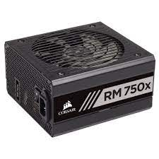
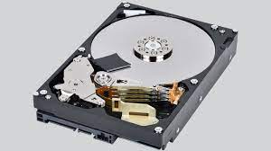
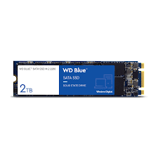

The motherboard (occasionally shortened to MOBO) is the foundation for all other parts to connect to; it also serves as the line that allows all other parts to communicate with each other.
The Power Supply Unit (PSU) handles the delivery of power to the rest of the components in your computer. It is the most critical part of the system, and if it fails, it's can to take other parts with it.
Persistent storage encapsulates both Hard Disk Drive (HDD) technology and Solid State Storage (SSD) technology. HDDs are the older of the two forms of persistent storage, quite slow, but are usually more reliable in their longevity. SSDs are the newer of the two forms, the form to which is still rapidly evolving. They can be blazing fast, and are nearly as reliable as HDDs, however some may not be as reliable in their longevity.
Random Access Memory (RAM) is a short-term storage that holds all the data your computer needs to use very quickly in rapid succession. This is different from persistent storage because if the computer turns off, the data that the RAM holds is lost.
Image of a Motherboard
Image of a PSU
Image of a HDD
Image of a SSD